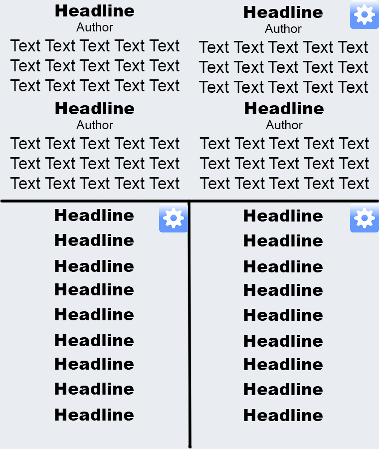

Facebook News App
Online Design Doc
A Facebook App with news customized to the user for everyone on Facebook interested in news stories.
Mission
This Web-App is supposed to close the gap between the Facebook News Feed and the front page of a typical news site. By analysing the Facebook data of a user it is easily possible to customize a front page for each user. Information of each user like the current position, the hometown or Likes for specific themes can be utilized. In this way a customized front page for each user is possible. Directly in Facebook with news from possibly multiple sources.
Possible Features
Tons of features are imaginable for such an app. Here is a real big shot:
- Getting Facebook User Data from their Social Graph API
- Getting headlines, leads, links, authors and more from different news sites
- Aggregating this news stories together with Facebook User Data and build up different sections:
- Where does the user live? Bring news from around his home
- Where is the user at the moment? Bring news from there
- Where is the user often besides home (Work, Holiday, old home)? Bring news from such regions
- Which Facebook entities does the user like? Bring news from that. Examples: User liked the NFL; bring up a section with last/upcoming games. User liked Star XY; bring stories with Star XY
- Algorithm to decide exact placing of story and decide which source to use (based on user data)
- Everything of this with nice UI running seamlessly in the Facebook website
- Further customizable UI (by the user) expending/decreasing sections, bringing in view sections which didn’t seemed to fit (after looking at the Facebook data) etc.
- Storing of this user preferences (local storage, cookie or server)
- Extensive fall back solutions: If user data is restricted get for example position over the device, if one source is offline use another etc.
Features
My approach is mainly restricted by two reasons: lack of time and lack of open APIs. Whereas there are tons of APIs from news sites only one is fully open to everyone (The Guardian) and only one is briefly restricted (The New York Times). (In both cases certain volume restrictions apply, but that is a secondary problem for this project.) Every other API of a big news site in English is heavily restricted. While The Guardian even sends full texts over their API and The New York Times at least headlines, leads, links and authors every other API in the news sector want payments. That is why I will work mostly with The Guardian API. (The New York Times API is only part of a stretch goal.) The time restriction mainly means that I will only use a tiny fraction of the Facebook user data to build the customized front page.
- Getting Facebook User Data from their Social Graph API
- Getting news stories from The Guardian API
- Order this news stories (or queries for the API call) with the help of the Facebook User Data in sections
- Build sections after the users location and home on country scale (On city/region scale is a stretch goal. I can get Guardian stories easily sorted by their country. To sort it by City/region is much harder.)
- Customizable UI with user control over sections sizes and content
- Storing user preferences in local storage
- Providing simple fall back solutions
- Stretch Goal: Get App working as Facebook Web App (seamless in Facebook)
- Stretch Goal: Build sections after Facebook Entities (Likes)
- Stretch Goal: Extensive fall back solutions, like location detection
- Stretch Goal: Bring in second news source (The New York Times)
Stretch Goals are ordered in the way I want to implement them, when I got time left.
Used Web Services
UI
The user gets multiple sections with different articles customized for him. For each article the user sees at least the headline together with a link to the article. (I won’t show any full texts inside the app. To read the full article the user has to click the link and is taken to the news stories website.) Some sections contain also a lead and the author of an article. The size of the sections (and with it the number of articles included) is customizable by the user as well as the positions of the sections. Sections are addable and droppable.
